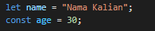
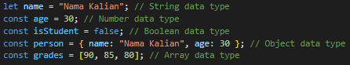
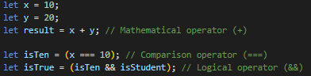
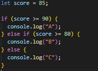
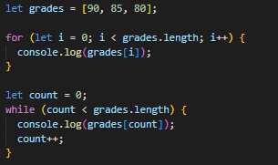
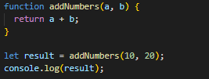

JavaScript adalah bahasa pemrograman tingkat tinggi yang ditafsirkan yang digunakan terutama untuk membuat halaman web yang dinamis dan interaktif.
Itu dapat digunakan untuk memodifikasi Model Objek Dokumen (DOM), menambahkan penanganan acara, membuat animasi, dan melakukan perhitungan yang rumit.
Berikut adalah contoh sederhana dari kode JavaScript:
Dalam contoh ini, pesan variabel dideklarasikan dan diberi nilai "Hello World!".
Fungsi showMessage kemudian ditentukan, yang menampilkan peringatan dengan nilai variabel pesan.
Terakhir, pendengar acara ditambahkan ke elemen tombol di halaman menggunakan metode addEventListener.
Pendengar ini akan memanggil fungsi showMessage saat tombol diklik.
Dan berikut ini adalah beberapa konsep dasar dan contoh JavaScript
Variabel : Variabel digunakan untuk menyimpan data dalam suatu program. Dalam JavaScript, variabel dideklarasikan menggunakan kata kunci var, let, atau const.

Tipe data: JavaScript memiliki beberapa tipe data, termasuk angka, string, boolean, objek, dan array.

Operator: JavaScript memiliki beberapa operator, termasuk operator matematika, perbandingan, dan logis.

Pernyataan bersyarat: Pernyataan bersyarat digunakan untuk mengeksekusi kode berdasarkan kondisi tertentu. JavaScript memiliki pernyataan if, else, dan else if.

Loops: Loops digunakan untuk mengulang bagian kode. JavaScript memiliki for dan while loop.

Fungsi: Fungsi adalah blok kode yang dapat dijalankan saat dipanggil. Fungsi dapat menerima parameter dan mengembalikan nilai

Ini hanyalah beberapa konsep dasar JavaScript.
Saat Anda semakin terbiasa dengan bahasanya, Anda dapat menjelajahi topik yang lebih lanjut seperti penanganan peristiwa, pemrograman berorientasi objek, dan pemrograman sinkron.